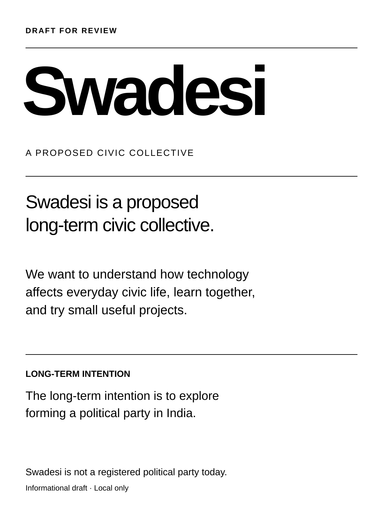
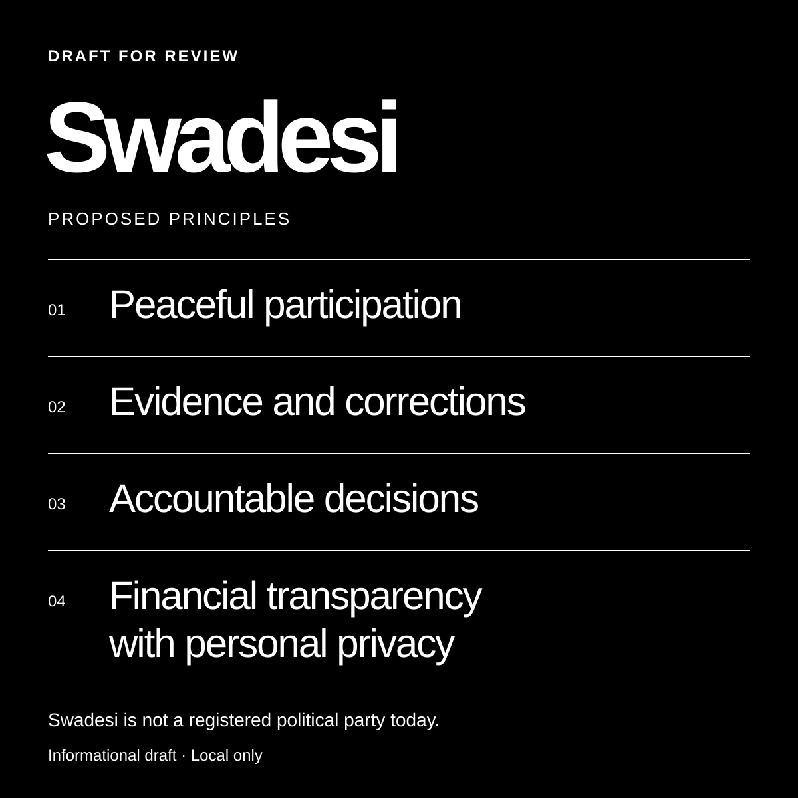
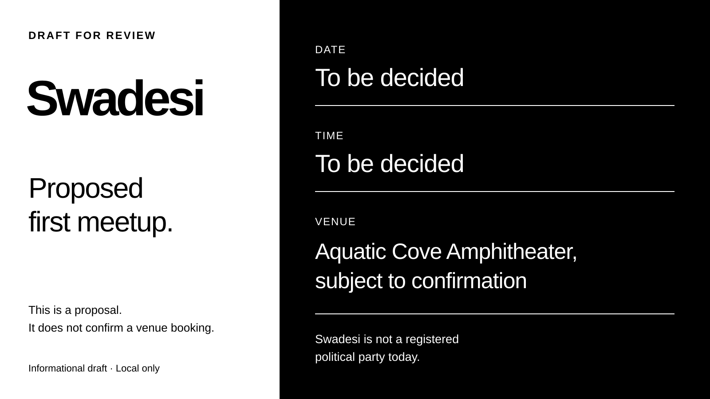

Three static SVG layouts
Informational
poster drafts.
Black and white. General-public information. Each layout is a local draft for review.

01 — About the idea
Portrait · 1200 × 1600
Open portrait SVG

02 — Proposed principles
Square · 1200 × 1200
Open square SVG

03 — Proposed first meetup
Landscape · 1600 × 900
Open landscape SVG
These layouts contain informational text only. Swadesi is not a registered political party today.